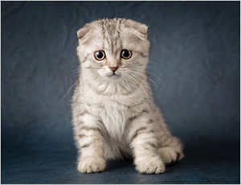

Nguồn Gốc Mèo Tai Cụp
Năm 1960, những chú mèo Scottish Fold lần đầu tiên xuất hiện tại trang trại của người chăm cừu tên
William Ross sinh sống tại Tayside đất nước Scotland.
Sau đó, những chú mèo Scottish Fold được lai với một số giống mèo của Mỹ và mèo images lông ngắn để
chúng có những chiếc tai cụp đặc biệt như ngày nay.
Vào những năm 1970 nhất là vào năm 1978, những chú mèo Scottish Fold đã được nhân rộng và nuôi phổ
biến tại khu vực Châu Âu và Bắc Mỹ.
Ngày nay, số lượng mèo tai cụp không nhiều, xong chúng vẫn được xếp vào dimages sách những chú mèo được
yêu thích nhất trên thế giới.
Đặc Điểm Mèo Tai Cụp
Những chú mèo tai cụp Scottish Fold khi trưởng thành có thân hình tương đối mũm mĩm. Độ dài của
phần thân dài hơn so với chiều cao của chúng.
Phần đầu của những chú mèo tai Scottish Fold rất tròn và to khiến cho gương mặt của chúng dễ thương
hơn. Đôi mắt to tròn thường có màu ximages xám, ximages đen, ximages ngọc bích, ximages dương, màu khói…. Tai
của những chú mèo Scottish không phải tất cả đều cụp mà vẫn có những chú tai thẳng.
Lông của mèo Scottish Fold có 2 dạng: lông dài và lông ngắn. Đuôi của chúng rất dài, to, thẳng
được phủ 1 lớp lông dài vô cùng nhẹ nhàng giống như những bông hoa lau.
Thông thường, bộ lông của những chú mèo tai cụp sẽ có màu sau đây: màu xám, mèo scottish tabby, mèo
scottish golden, mèo scottish straight, mèo scottish classic tabby, màu lilac, màu xám ximages, màu
sliver….
